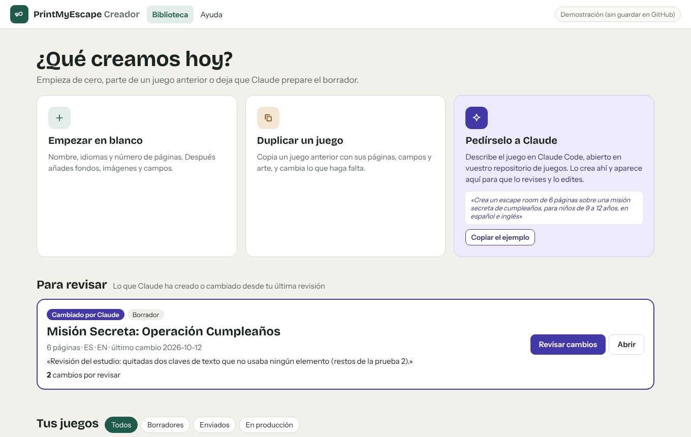
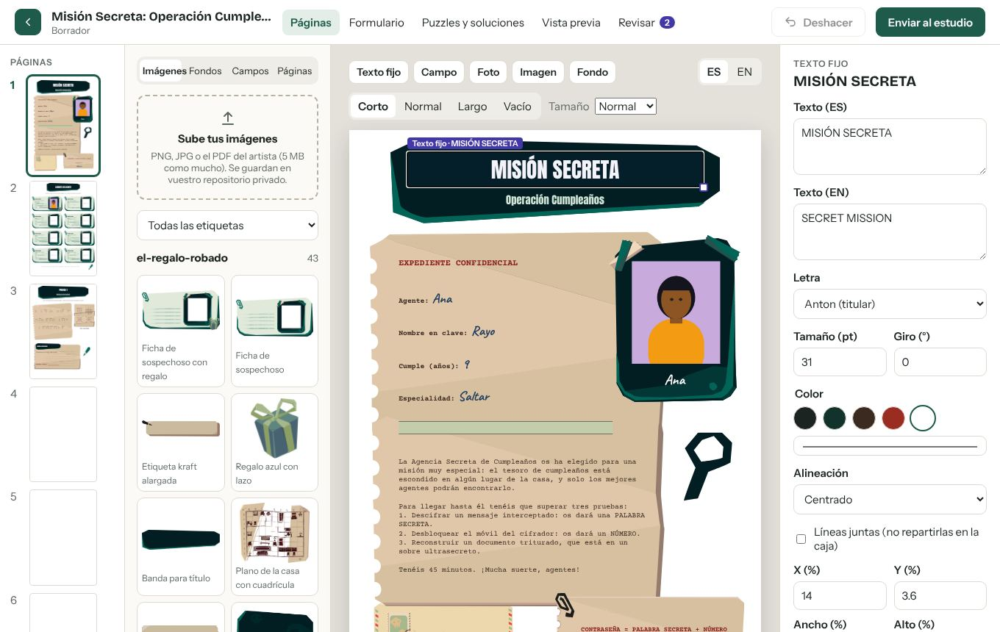
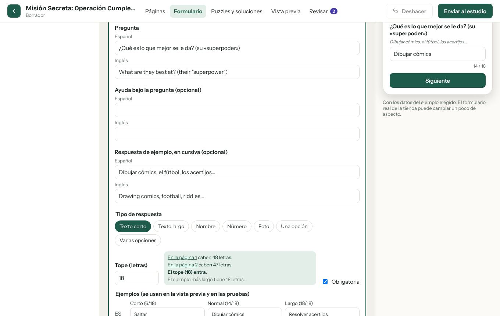
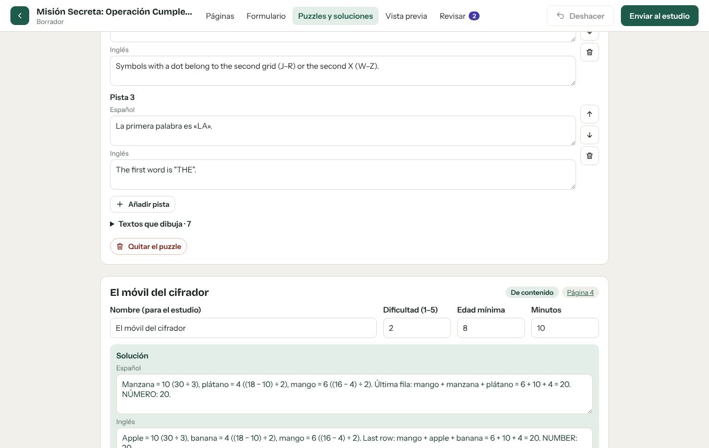
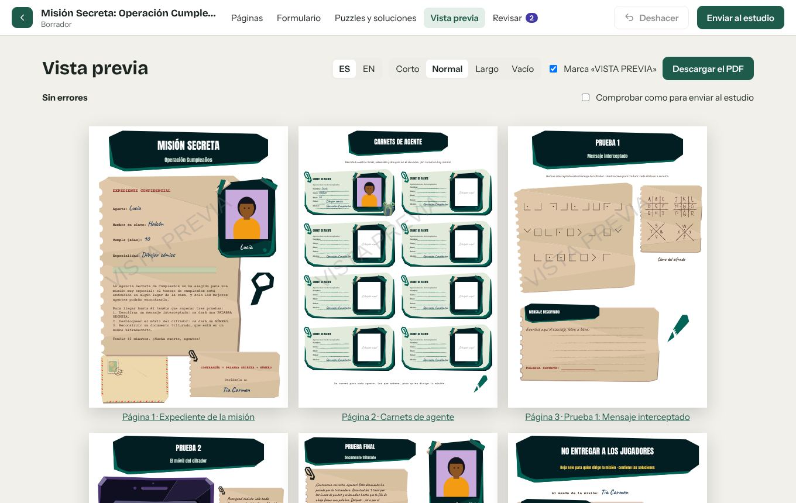
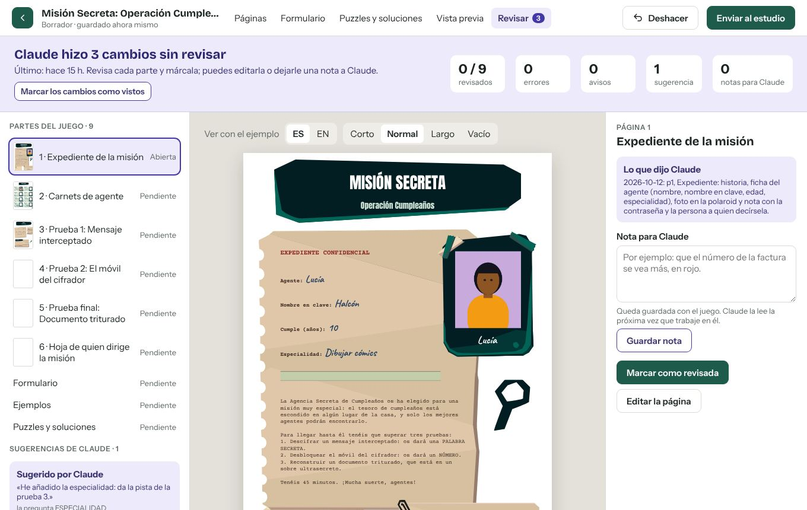

Cómo usar el creador
El creador es donde se diseñan los escape rooms imprimibles: las páginas, las preguntas que contesta el comprador y los puzzles. Todo lo que hagas se guarda solo. Claude puede preparar juegos y cambios por ti, y tú los revisas aquí.
Entrar
Abre el enlace que te ha dado el estudio. Entras directamente y el navegador te recuerda: la próxima vez basta con abrir el creador.
- Si te pide un token de acceso, pega el que te ha dado el estudio y pulsa Entrar.
- Para cerrar la sesión en un ordenador compartido, en la pantalla de inicio pulsa Salir.
- El enlace es personal: no lo reenvíes.
Tus juegos
La pantalla de inicio reúne todo:
- Para revisar: los juegos que Claude ha creado o cambiado desde la última vez que los miraste.
- Tus juegos: El regalo robado (tu juego original) y Misión Secreta: Operación Cumpleaños (el que preparó Claude) ya están para usarlos como base.
- Material para reutilizar: las páginas, preguntas, imágenes y puzzles de la biblioteca, comunes a todos los juegos.

Diseñar una página
En Páginas ves la página tal como se imprimirá, con el ejemplo que elijas arriba (corto, normal o largo) y en cada idioma.

Lo básico
- Elegir: haz clic en un texto, una imagen o un hueco. Sus propiedades salen a la derecha.
- Mover: arrástralo, o usa las flechas del teclado (con Mayúsculas, más rápido). Tamaño: arrastra la esquina.
- Quitar: tecla Supr, o el botón rojo de las propiedades.
- Deshacer: el botón de arriba o Ctrl+Z.
Añadir
- Texto fijo: un texto que sale igual en todos los juegos (por ejemplo, un título). Se escribe en cada idioma.
- Campo: un hueco donde se imprime lo que escribe el comprador (su nombre, su edad…). Foto: el hueco de una foto del comprador.
- Imagen: una pieza de la biblioteca. Arrástrala a la página o púlsala para ponerla en el centro.
- Sube tus imágenes: PNG, JPG o el PDF del artista, de hasta 5 MB. Se guardan en la biblioteca para todos los juegos. Pide el autor: no se admiten imágenes hechas con inteligencia artificial.
- Fondo: un color, un papel de la biblioteca o una página del PDF del artista.
- Añadir página (abajo a la izquierda): en blanco, de la biblioteca (trae también las preguntas que necesita), duplicando la abierta o desde un PDF del artista.
Puzzles en la página
Un puzzle de contenido (un mensaje cifrado, un acertijo) es una caja con sus piezas dentro. Elige el puzzle y pulsa Editar por dentro para mover y cambiar sus piezas; Salir del puzzle para volver a la página.
El formulario
En Formulario están las preguntas que contesta el comprador, por pasos (secciones). A la derecha ves cómo lo verá él.

- Sección nueva o Reutilizar una sección de la biblioteca (trae sus preguntas con ejemplos).
- Pregunta nueva: escribe la pregunta y elige el tipo (texto corto, texto largo, nombre, número, foto, una opción o varias).
- Tope: cuántas letras puede escribir el comprador. El creador te dice cuántas caben en cada página donde sale («en la página 2 caben 47 letras») y si el tope entra.
- Ejemplos: tres respuestas (corta, normal y larga) para ver las páginas llenas. La larga debe llegar al tope.
- Una pregunta escrita solo en un idioma no se guarda hasta que esté en todos: el creador te avisa.
Puzzles y soluciones
Cada puzzle tiene su ficha: nombre, dificultad, edad mínima, minutos, la solución y las pistas, en cada idioma. La solución y las pistas son para quien dirige el juego y para el estudio.

- Del catálogo: puzzles que usan los datos del comprador (casillas, tiras recortables, runas…). Se añaden en una página nueva.
- Puzzle de contenido nuevo: un acertijo que no depende del comprador. Se crea con su enunciado y luego se completa en la página.
Vista previa
El juego entero, página a página, como saldrá impreso. Arriba eliges el idioma y el ejemplo. Descargar el PDF te da el juego de prueba (con la marca «VISTA PREVIA»).

Si hay algo que corregir, sale arriba con un enlace a su página. Marca Comprobar como para enviar al estudio para ver lo que faltaría antes de enviarlo.
Revisar lo que hizo Claude
Cuando Claude crea o cambia un juego, en Revisar ves qué hizo, parte por parte.

- Marcar como revisada cada página, el formulario, los ejemplos y los puzzles. Pasa sola a la siguiente.
- Sugerido por Claude: algo que Claude añadió sin que se lo pidieras, con el porqué. Aceptar lo deja; Descartar lo quita.
- A presupuestar: lo que pediste y no se puede hacer con lo que hay (una mecánica nueva, un dibujo que encargar). Lo valora el estudio.
- Nota para Claude: escribe lo que quieres cambiar. Claude la lee la próxima vez que trabaje en el juego y te dice qué hizo.
- Puedes cambiar tú mismo cualquier cosa con Editar la página.
Enviar al estudio
Cuando el juego esté listo, pulsa Enviar al estudio (arriba a la derecha). El creador comprueba que no falte nada: si falta algo, te lleva a la vista previa con la lista. El estudio recibe el juego para revisarlo y prepararlo; mientras tanto, ya no se edita aquí.
Qué hace Claude
Claude Code es un asistente que trabaja directamente sobre vuestro repositorio de juegos, con las mismas piezas y reglas que el creador. Le describes lo que quieres y él:
- crea un juego desde cero o a partir de otro, con la biblioteca: páginas, preguntas, ejemplos y puzzles;
- propone la historia y los puzzles antes de maquetar, y espera tu visto bueno;
- atiende las notas que le dejas en Revisar;
- comprueba el juego y mira cada página antes de dártelo.
Prepararlo (una vez)
Hace falta una suscripción de Claude (Pro, Max, Team o Enterprise) y acceso al repositorio kreatures-studio/printmyescape-juegos en GitHub.
- Instala Claude Code. Lo más sencillo es la aplicación de escritorio de Claude (Windows · Mac): entra con tu cuenta y abre la pestaña Code. Si prefieres el terminal, en Windows abre PowerShell y escribe:
En Mac:irm https://claude.ai/install.ps1 | iexcurl -fsSL https://claude.ai/install.sh | bash. Más opciones en la documentación de Claude Code. - Instala Git y Node.js si no los tienes: Git para Windows y Node.js (la versión LTS). Claude los usa para guardar los juegos y para sus herramientas.
- Descarga el repositorio de juegos en tu ordenador:
La primera vez, Git te pide entrar en GitHub: hazlo con la cuenta que tiene acceso. (Con GitHub Desktop: File → Clone repository.)git clone https://github.com/kreatures-studio/printmyescape-juegos.git - Instala las herramientas del juego, dentro de la carpeta descargada:
cd printmyescape-juegos npm install --prefix .pme - Abre Claude Code en esa carpeta. En la aplicación de escritorio, elige la carpeta
printmyescape-juegos; en el terminal, escribeclaudedentro de ella. La primera vez pregunta si confías en la carpeta y si activa el servidor printmyescape: acepta las dos cosas. Para comprobarlo, escribe/mcp: debe salir printmyescape conectado.
Pedirle cosas
Escríbele como se lo dirías a una persona del estudio. Por ejemplo:
Claude te enseña primero la estructura (historia, puzzles y qué datos pide al comprador) y no maqueta hasta que le digas que sí. Al terminar deja un resumen de lo que hizo y sube el juego.
Creador y Claude, juntos
| Cuando… | …en el creador |
|---|---|
| Claude crea un juego | Aparece en Para revisar y en Tus juegos. |
| Claude cambia un juego que tienes abierto | Sale el botón Hay cambios nuevos: recargar. Nada de lo tuyo se pierde sin avisar. |
| Le dejas una nota en Revisar | Claude la lee la próxima vez (pídele «atiende las notas de…») y la marca como hecha. |
| Cambias algo en el creador | Claude trabaja siempre sobre la última versión guardada. |
Si algo falla
- «GitHub no acepta ese token»: el token ha caducado o se copió mal. Pide al estudio un enlace nuevo.
- «No se pudo leer el repositorio»: comprueba tu conexión y vuelve a intentarlo. Si sigue, avisa al estudio.
- «Hay una versión más nueva del juego»: alguien (o Claude) guardó a la vez. Pulsa recargar; si te faltan cambios tuyos, vuelve a hacerlos.
- Claude no ve el servidor printmyescape: escribe
/mcp; si sale pendiente de aprobar, acéptalo. Si dice que faltan herramientas, repitenpm install --prefix .pmeen la carpeta del repositorio.